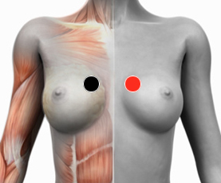

Aftosa
Pares
carina - carina
dorsal 4 - dorsal 4
ciático - dorsal 7

Generalidades:
Aftosa virus (ARN) o Fiebre de Aftosa.
Muy común, síntomas traqueales y bronquiales, se trasmite por lácteos (yogurt y yakult). Aftas en la boca. Si se asocia a candida albicans, si se aloja en la vagina, algodoncillo en ésta. Este virus soporta a hongos de la boca y pulmón. Puede producir aftas en la boca que son heridas abiertas y dolorosas.
Checar pares para hongos.
Transmisión
Por vía aerea.